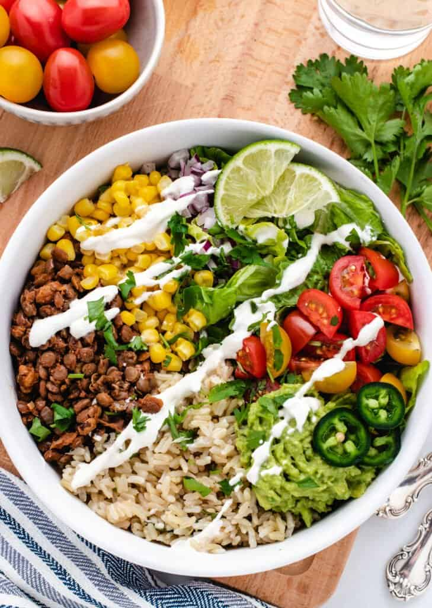

Vegan Taco Bowls

Description
This is a really yummy bowl made with veggies and meat.
Impress your friends and family with your fierce and fresh cooking skills!
Ingredients for Walnut Lentil Taco Meat
- 2 cups cooked brown rice
- 2 cups cooked brown lentils
- 3/4 cup chopped walnuts
- 1 diced onion
- 1 tbsp chili powder
- 1 tsp oregano
- 1 tsp ground cumin
- 1/2 tsp smoked paprika
- 1/2 tsp garlic powder
- 1/2 tsp onion powder
- 1/2 cup low sodium vegetable browth
- 1 tbsp soy sauce
- 1 tbsp lime juice
- salt and pepper to taste
Ingredients for Cashew Lime Crema
- 1/2 cup raw cashews
- 1/3 cup water
- 2 tbsp lime juice
- pinch of salt
Toppings
- 1 diced avocado
- diced tomatoes
- salsa or pico de gallo
- lettuce, spinach or kale
Steps
- Place all ingredients for the Cashew Lime Crema in a blender and blend until smooth.
- Saute the onion with a pinch of salt in a large skillet on medium heat, stirring frequently until the onion is transluscent. Add water as needed.
- Turn the heat down to low and add the chopped walnuts. Saute for 2-3 minutes, stirring frequently.
- Add chili powder, cumin, oregano, paprika, garlic powder and onion powder and stir to coat the onions and walnuts. Cook for about 30 seconds to 1 minute.
- Add the cooked lentils, broth and soy sauce.
- Simmer on low and cook covered for 10 minutes.
- Stir occasionally throughout and check on the liquid. The liquid should be slowly cooking out, but you can add a little more broth to hydrate the lentils if it gets dry too quickly.
- If the liquid hasn't cooked out after 10 minutes have passed, remove the lid and stir frequently until the excess liquid is gone.
- When 10 minutes are up and the excess liquid is gone, taste and adjust for seasoning.
- Stir in the lime juice. If desired, mash some of the lentils for a creamier texture.
- To assemble, add the rice, taco meat and any desired toppings to a bowl. Serve with a dollop of lime crema.